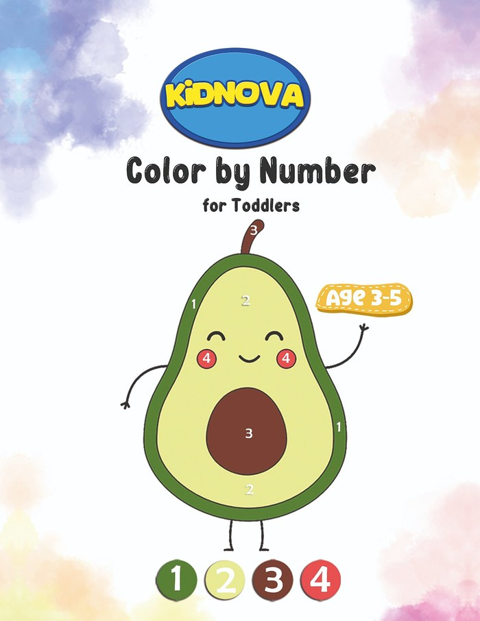

10 Toy Car Activities for Toddlers: Easy Learning Games at Home
By Kidnova · Updated November 2026
If your toddler loves toy cars, you already have one of the best learning toys at home. A small basket of cars can teach counting, colors, sizes and new words, all while your child thinks they are just playing. Here are 10 easy toy car activities that take only a few minutes to set up.
1. Number parking lot
Make parking spots with numbers and ask your child to park each car in the right spot. Start with numbers 1 to 3, then add more as your child learns them. Say the number out loud each time a car parks.
 Car Play Mat Printable – Road Number Matching GameNumbered parking spots from 1 to 8, printed at A3 size to fit real toy cars.
Car Play Mat Printable – Road Number Matching GameNumbered parking spots from 1 to 8, printed at A3 size to fit real toy cars.
2. Color sorting garage
Put colored paper or bowls on the floor and ask your child to drive each car to the garage of the same color. It is a simple, hands-on color lesson.
3. Masking tape roads
Stick masking tape on the floor to make roads, curves and a parking area. Children can follow the road with their cars, which also builds hand control.
4. Cardboard ramp races
Lean a piece of cardboard on the sofa and race two cars down it. Ask which car went further, then make the ramp higher and try again. Toddlers learn words like fast, slow, high and low.
5. Car wash
Fill a tray with a little soapy water, add a sponge and an old toothbrush, and let your child wash the cars. Put a towel underneath and stay close during water play.
6. Big and small line-up
Ask your child to line up the cars from the smallest to the biggest. Comparing sizes is an early math skill that comes before measuring.
7. Count the cars
Count cars together as you put them back in the basket. Then try: how many red cars do we have? Counting real objects is how children learn what numbers mean.
8. Car tracks in paint
Roll toy cars through washable paint and drive them across a big sheet of paper. The tracks make colorful art and the cars can be washed afterwards.
9. Traffic light game
Hold up green, yellow or red paper. Green means drive, yellow means slow down, red means stop. It is a fun listening game that practices self-control.
10. Color the vehicles
After active play, a calm activity helps children settle. Coloring pages of cars, buses and trucks keep the theme going and practice holding a crayon.

Color by Number for Toddlers68 big and easy color by number pages, including vehicles.Final thoughts
Pick one or two ideas a day and follow your child's interest. Use cars that are big enough for your child's age, and keep small parts away from children under 3. The simplest games are often the ones toddlers ask for again and again.